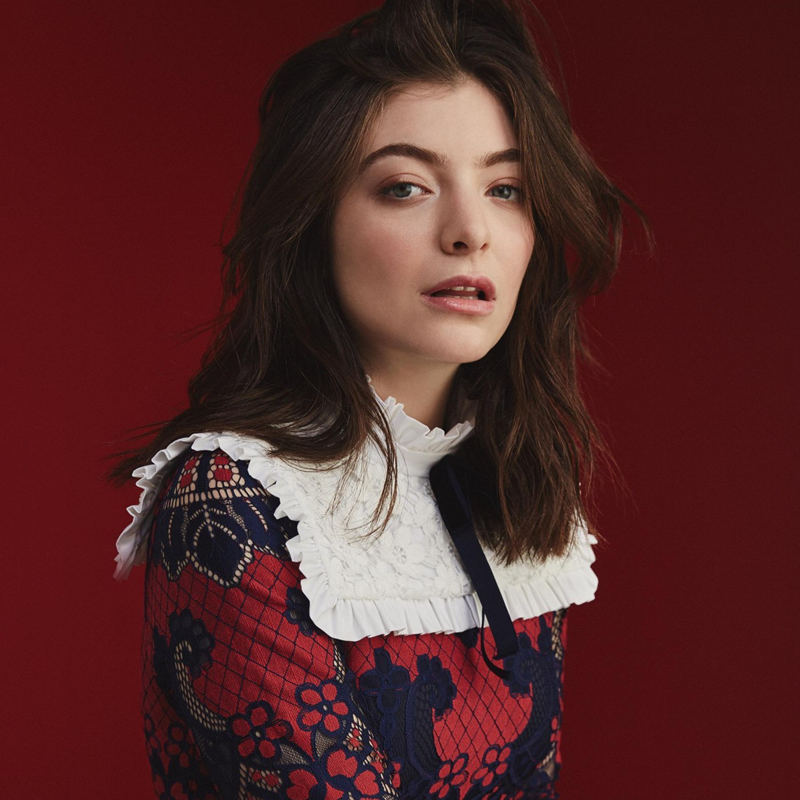

Lorde
"Like wildflowers you must allow yourself to grow in all the places people thought you never would."

Ella Marija Lani Yelich O'Connor, otherwise known by her stage name, Lorde
Lorde Wiki
- Born in Takapuna, New Zealand, on November 7th, 1996 (age 21). She rose to become one of the most famous singers of 2013-2014, winning many awards and embarking on a world tour for her debut album, Pure Heroine.
- In 2017 she announced her new album, Melodrama, which is being released June 16th, 2017.
- She is noted for her lyrical genius, uniqueness in the modern music industry and success as a teen.
- Lorde signed a publishing deal with Songs Music Publishing, worth a reported US$2.5 million, after a bidding war between various companies, including Sony Music Entertainment and her label UMG.
- She released "Melodrama" in June to stellar reviews, with some citing it as the "best pop album of 2017".
- Lorde is described to have a alternative and pop music style, along with art pop, indie pop, dream pop and electropop.
- Her main influences were noted to be jazz musician Billie Holiday, and soul musicians Sam Cooke, Etta James and Otis Redding, whose music Lorde admires for "harvesting their suffering."
- Other inspirations for Lorde include Lady Gaga, Lana Del Rey, Grace Jones, James Blake, Yeasayer, Animal Collective, Bon Iver, Radiohead, Jamie Woon, Arcade Fire, Kurt Vonnegut, Laurie Anderson, Kanye West and Prince.
- Lorde is known for having "exotic" dance moves on stage, which some people deem as "demonic."
- Lorde has revealed she has synesthesia, which helped her write Melodrama.